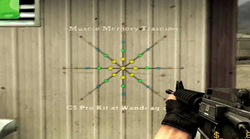
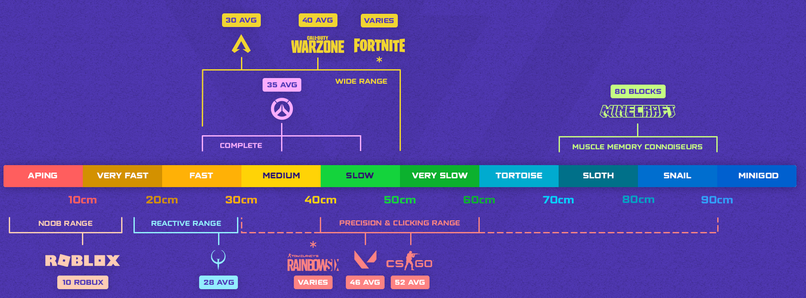

A myth lives in the mind of the average competitive gamer: that muscle memory is the holy grail of aim. The idea is that you just need to grind thousands of hours on one sensitivity, so that your hand, without any input from the brain, performs perfect movements. To memorize, like a virtuoso violinist scales, every centimeter of the mousepad, every micro-movement of the mouse. This idea is just as harmful and dangerous a coping mechanism as the belief that “aim is everything” (see EN Casualization of aim).

Not Memorization, but Adaptation
The main misconception is the idea of muscle memory as a rigid recording in the neurons: “a 3.7 cm turn to the right == a headshot.” In reality, it’s not about recording specific movements, but about forming the ability to effectively adapt to different conditions, to conduct analysis. When it comes to aim, the brain and nervous system learn not to remember mouse positions, but to solve motor tasks: “The target is moving like this, I need to apply a force of this specific strength and duration.”
Sens-Schizophrenia: The Perfect Sens is an Illusion
Acolytes of the cult believe that by finding their perfect sensitivity (let’s say, 52 cm/360), they will reach nirvana. But the world is unstable. What happens if:
- You change your mousepad/skates to slightly slower/faster ones
- A speck of dust gets on the skates
- The weather brings higher humidity – the mousepad becomes a bit slower
- You’ve worn a slow spot on the mousepad, where movement in the center is slower than on the edges
Any of these micro-changes completely invalidates the idea of memorized movements. With your ideal 52 cm/360 sensitivity, you de facto need to apply different amounts of force to perform the same movements expecting the same result. And if you rely purely on muscle memory, you will miss (You perfectly applied the force for a 10cm movement to the left, but the mouse traveled only 9.5cm or a full 10.5cm). Because your brain expected one level of resistance but got another.
Aim is Basketball: An Analogy
A basketball player throwing the ball into the hoop doesn’t calculate millimeters or reproduce a shot memorized down to the nanosecond. They assess the distance, the defenders’ movements, their own momentum, and adapt the shot on the fly. They rely on a general feel for their body, the ball, and the hoop’s position. They can score from different positions, with different approaches, using one or two hands, with or without wind, even with balls of different weight and bounce. Because they have developed general coordination, not memorized one specific shot.
It’s the same with a cracked aimer. They don’t remember how many centimeters to move the mouse for a headshot from Mirage’s fireboxes into pit, they don’t know what hand movement is needed to turn 20°. They see the target, their brain instantly assesses the distance from the crosshair to the target and the target’s movement speed, and their arm, wrist, and fingers cooperate to solve this task. The composition of this “cooperation” will change depending on the sensitivity.
- On a low sensitivity (50 cm/360) the main work is done by the forearm and shoulder for large turns, while the wrist and fingers make micro-corrections.
- On a high sensitivity (20 cm/360) the wrist and fingers are actively engaged, while the movement from the shoulder and forearm is reduced.
The perfect aimer isn’t the one who memorized one sensitivity, but the one who developed neuromotor control that allows them to effectively use any sensitivity to solve the task. Depending on the task – the sensitivity can be different – for arena shooters a faster sens might be more convenient, while for tactical ones – a slower one.

The Visuomotor Feedback Loop
When you grind an aim trainer for hours, you’re not training your arm muscles. You’re training the speed and efficiency of the feedback loop:
- Eye: Sees the target and its movement.
- Brain: Processes the visual information and calculates the necessary motor command.
- Hand: Executes the command.
- Repeat the cycle: analysis of the previous result.
The essence of training is to shorten the time it takes to complete this loop (reduce analysis time) and increase the accuracy of the calculation in step №2. Muscle memory here is not memory of the movement, but memory of how different motor commands correlate with the result on the screen. It’s a skill of calibration, not reproduction.
Conclusion
An obsession with muscle memory and the search for the “one true” sensitivity is a dead end. It creates a fragile system that collapses at the slightest change in conditions.
The true skill of aiming is not muscle memory, but visuomotor coordination. It’s the ability of your brain and body to quickly and accurately adapt to any conditions: a new sensitivity, a different gameplay style, a changed situation. It’s about plasticity, not rigidity. You need to develop not the memory of the hand, but the connection between the eye, the brain, and the hand. And then you’ll have that cracked aim.
With regular aim training – changing sensitivity stops being noticeable – you can easily jump between 24-34-38-44-55-66-77-88 (etc., etc.) cm/360 without feeling much difference – the speed of adaptation to new conditions will take mere seconds.